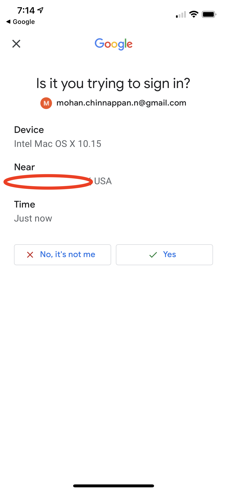

- MFA is a secure authentication method that requires users to prove their identity by supplying **two or more pieces of evidence (or “factors”)** when they log in.
- One factor is something the **user knows**, such as their username and password. Other factors are verification methods that the user has in their **possession**, such as an **authenticator app or security key**.

- By tying user access to **multiple types of factors**, MFA makes it much harder for common threats like **phishing attacks and account takeovers** to succeed.
- Salesforce as your partner in **protecting your customer data**, we're announcing that, beginning **February 1, 2022**, Salesforce will begin requiring customers to enable MFA **in order to access** Salesforce products.
- Email, SMS text messages, and phone calls aren’t allowed as MFA verification methods because email credentials are more easily compromised, and text messages and phone calls can be intercepted.
- It’s a lot harder for bad actors to get control of an actual mobile device or physical security key than it is to infiltrate an email account or hack a cell phone number.
